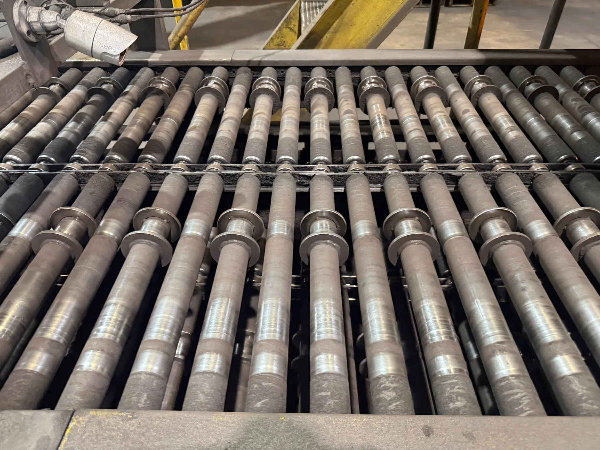

Furnace Conveyor Belt System
Modeled a furnace conveyor and its components in CAD from existing hardware, produced the CAM to machine replacement parts, built custom workholding to hold them, and assembled physical conveyor segments.
- System
- Heat-treatment furnace conveyor — chain, links, rollers, pipes, sprockets, bearings
- Reference
- Existing equipment and parts, measured directly
- My role
- CAD modeling, assemblies, CAM setup, workholding design, machining and assembly support
- Status
- Conveyor replacement not fully completed during the internship

Rebuilding a conveyor from the parts up
The furnace conveyor needed replacement components, and there were no drawings to order from — only the existing equipment and the worn parts themselves. I modeled the conveyor system and many of its individual components in CAD using those parts as reference, then created the CAD and CAM files needed to actually manufacture new ones.
Alongside the individual parts I built assemblies, because a link that is correct on its own is not necessarily correct in a chain. The assemblies were used to check how components fit together before and during manufacturing.
Model, machine, assemble
Each stage had to survive the next one. This is the sequence the project actually ran in.
CAD assembly
Parts modeled from existing hardware, then combined into segment and chain assemblies to verify fit.
CAM & workholding
Toolpaths programmed, and custom vise jaws machined to hold awkward parts securely.
Machined components
Links, rollers, pins, and related hardware cut on the machining center.
Physical assembly
Machined components built up into conveyor segments matching the CAD.
Assemblies
Built to confirm that individually modeled components would actually mate.
Getting the parts on the machine
Conveyor links and sprockets are awkward shapes to clamp. Holding them in standard vise jaws either crushes the part or lets it move, so I machined custom vise jaw blocks shaped to the components — including the drill link and the drive sprocket — to hold them securely while they were cut.
On the drive sprocket: the sprocket itself was not designed from scratch. It was an existing component, and the CAM setup shown here was created to add the required holes to it.
Modeled parts
Individual components modeled from the existing conveyor. Select any part to view it larger.
From model to metal
Multiple conveyor components were machined, and physical segments were built from them.
Where the project stands
The overall furnace conveyor replacement was not fully completed during my internship. What was completed is substantial: the CAD models and assemblies, the CAM programs, the custom workholding, the machined components, and assembled conveyor segments matching the CAD.
What I learned
- Assemblies catch what part files hide. Several fit questions only became visible once links, rollers, and pins were constrained together.
- Workholding is part of the design job. Deciding how a part will be held changes how you model it, and a fixture you have to machine yourself is a real deliverable.
- Modifying an existing part is its own discipline. Adding holes to a sprocket you did not design means working to the geometry that already exists rather than the geometry you would have chosen.